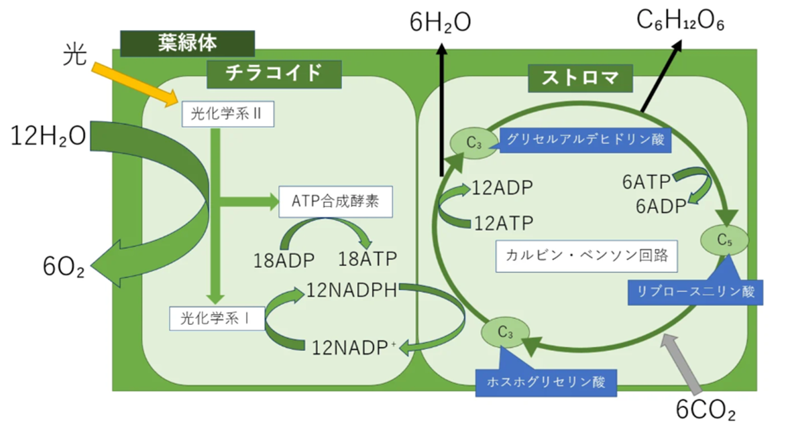

Slide 01
光合成とは
植物の葉緑体で光エネルギー（太陽光）を化学エネルギー（糖）に変換する2段階プロセス。
①明反応（チラコイド）
光エネルギーを直接利用して水（H₂O）を分解し、酸素（O₂）を発生させるとともに、生体エネルギー ATP と NADPH を合成する。
- 水を分解して電子を取り出し、プロトン（H⁺）を生み出す
- 電子伝達系を通じ ATP と NADPH を合成する
②暗反応（ストロマ）
明反応で作られた ATP と NADPH のエネルギーを使い、空気中の CO₂ を還元してブドウ糖などの有機物を合成する（カルビン・ベンソン回路）。
- 光を直接必要としない反応
- CO₂ → 糖（ブドウ糖）
Slide 02
葉緑体の中での2つの反応
Slide 03
葉緑体の詳細：チラコイドとストロマ

Slide 04
量子コヒーレンス効果
「明反応」の初期段階において 量子コヒーレンス効果 が働いているため、植物や藻類は極めて高い効率（ほぼ100%）で光エネルギーを伝達できる。
エネルギー伝達効率
〜97%
📍
効果が起きている場所
葉緑体内のアンテナ複合体（集光アンテナタンパク質）から光化学系複合体の反応中心へエネルギーが移動する経路。反応中心は、アンテナ色素が集めた光エネルギーを受け取り、化学エネルギー（電子）へと変換する部位。
⚛️
メカニズム：複数経路の同時探索
アンテナ複合体の色素分子が光を吸収し、励起状態が生まれる。通常であれば決まった経路をたどるが、量子コヒーレンス効果によって複数の経路を同時に探索（重ね合わせ）する。その結果、最もロスが少なく最短・最速で反応中心へ到達できる「最適なルート」を瞬時に選択する。
🌊
なぜ高効率か：量子干渉の利用
通常の物理法則ではエネルギーが周囲の熱などで散逸してしまうところを、波の性質（量子力学的干渉）を保つことで高効率なエネルギー移動を実現している。生命系が常温でも量子効果を活用できる驚くべき仕組み。